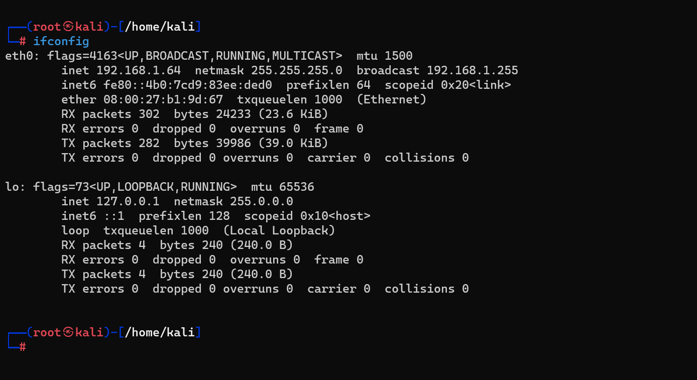

"MacChanger" Toolu və İstifadə Qaydası
MacChanger, Kali Linux daxilində mövcud olan bir "network security" tooludur və şəbəkədə işləyən qurğuların MAC adresini dəyişmək üçün istifadə edilir. MAC adresi, hər bir ağ cihazını identifikasiya etmək üçün istifadə olunan məhsulunun unikal identifikatorudur. MacChanger vasitəsilə bu adres dəyişdirilərək, şəbəkədi cihazların identifikasiya prosesi qarışdırıla bilər. MacChanger quraşdırılıb istifadə edilməsi çox asandır.
"MacChanger" toolu Kali Linuxa necə yüklənir?
Macchanger" standart olaraq Kali Linux-da quraşdırılmışdır. Bununla belə, o quraşdırılmayıbsa, siz bu addımları yerinə yetirərək quraşdıra bilərsiniz:
1. sudo apt-get update | Bu əmr sistem paket yükləyicilərini yeniləyir. |
2. Sonra, aşağıdakı əmri daxil edərək macchanger alətini quraşdırın:
sudo apt-get install macchanger
3. Macchanger alətinin quraşdırılıb-qurulmadığını yoxlamaq üçün aşağıdakı əmri daxil edin:
macchanger --version | Bu əmr macchanger alətinin versiya nömrəsini göstərəcək. Versiya nömrəsi göstərilirsə, alət uğurla quraşdırılmışdır. |
İstifadə Qaydası
'macchanger --help' əmrini daxil edərək, MacChanger toolunun kömək bölümünə daxil olmaq mümkündür. Bu əmr nəticəsində istifadə edilə bilən bütün seçimlər və komandalar haqqında məlumat verilir.
- -h, --help: Bu seçim, MacChanger toolunun kömək bölümünü açar və istifadə edilə bilən bütün əmrləri və funksiyaları göstərir.
- -V, --version: Bu seçim, MacChanger toolunun versiyasını ekranda göstərir.
- -s, --show : Bu seçim, MacChanger vasitəsilə təyin edilən şəbəkə qurğusunun MAC adresini ekranda göstərir.
- -e, --ending: Bu seçim, MacChanger toolunun MAC adresində sadece istifadəçi tərəfindən təyin edilmiş son 3 baytı dəyişdirməsinə imkan verir.
- -a, --another : Bu seçim, MacChanger vasitəsilə təyin edilən şəbəkə qurğusuna, eyni növə aid olan təsadüfi bir vendor MAC adresi verir.
- -A : Bu seçim, MacChanger vasitəsilə təyin edilən şəbəkə qurğusuna, təsadüfi bir vendor MAC adresi verir.
- -p, --permanent Bu seçim, MacChanger toolunun MAC adresini, original və permanent olaraq təyin edilmiş MAC adresinə qaytarır.
- -r, --random Bu seçim, MacChanger tooluna tamamilə təsadüfi bir MAC adresi təyin etməyə imkan verir.
- -l, --list[=keyword]: Bu seçim, bilinən vendorların siyahısını ekranda göstərir. -l seçimi yalnızca bir anahtar söz verilərsə, sadəcə həmin anahtar sözə uyğun olan vendorları göstərir.
- -b, --bia : Bu seçim, MacChanger tooluna "Burned-In Address" (BIA) kimi görünməsini təmin edir.
- -m, --mac=XX:XX:XX:XX:XX:XX : Bu seçim, MacChanger vasitəsilə təyin edilən şəbəkə qurğusunun MAC adresini istifadəçinin təyin etdiyi əvəzlə dəyişməsinə imkan verir.
- Son olaraq, device seçimi, MacChanger toolunun istifadə ediləcək şəbəkə qurğusunun adını təyin edir.
Aşağıdaki slaydlarda yuxarıdaki parametrlərə uyğun örnəklər görə bilərsiniz:
-

-
-
-
-
-
-
-